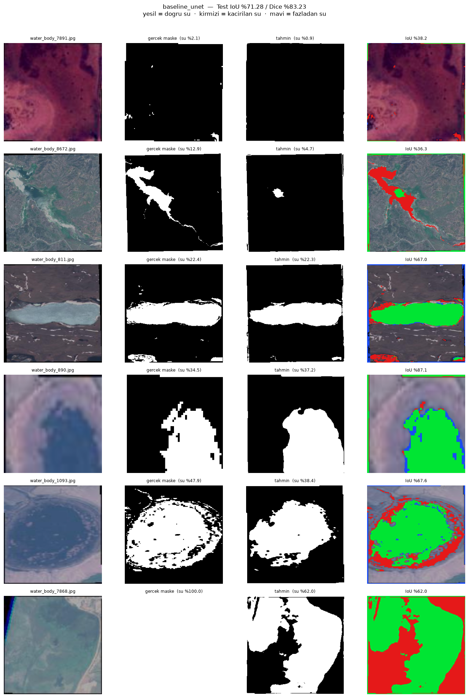
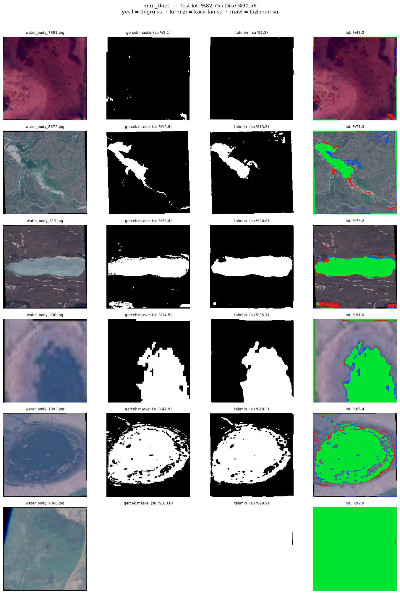

Deney Sonuçları Raporu
Görev 4 — Segmentasyon: Maskeli Veri Setinde Model Eğitimi ve Skor Yükseltme
Bu rapor, Görev Belgesi'nde tarif edilen beş adımın uygulanmasıyla elde edilen
sonuçları içerir. Veri seti olarak Satellite Images of Water Bodies (Kaggle) seçilmiş,
toplam 17 eğitim yapılmıştır: 1 baseline, 4 loss, 4 augmentation, 4 encoder,
4 mimari deneyi. Toplam eğitim süresi 145,8 dakika (RTX 4060 Laptop GPU).
Belgenin sorduğu soru — "skor ilk sonuca kıyasla yükseldi mi?" — şu şekilde
cevaplanmıştır: baseline %71,28 IoU / %83,23 Dice ile başlamış, en iyi konfigürasyon
%82,75 IoU / %90,56 Dice'a ulaşmıştır. Kazanç: +11,47 puan IoU, +7,33 puan Dice.
Belgenin ısrarla belirttiği "yalnızca accuracy yeterli değildir" uyarısı bu çalışmada
sayısal olarak doğrulanmıştır: aynı iyileştirme piksel doğruluğunda yalnızca 4,13 puan
görünürken IoU'da 11,47 puan görünmektedir.
Veri Seti ve Deney Kurulumu
Belgenin iki koşulu vardı: veri seti maske dosyaları içersin ve daha önce çalışılmamış
olsun. Satellite Images of Water Bodies Sentinel-2 uydu görüntüleri ile bunlara
birebir eşleşen ikili su maskelerinden oluşur. Görev, her pikseli su veya
su değil olarak etiketlemektir — yani ikili semantik segmentasyon.
Görev 3'ün veri seti neden kullanılamadı. Intel Image Classification'ın klasör adları
seg_train / seg_test / seg_pred olduğu için segmentasyon
veri seti sanılabiliyor. Kontrol edildiğinde 24.335 dosyanın tamamı .jpg
görüntüdür, tek bir maske dosyası yoktur; "seg" ön eki segment değil
Kaggle yarışma bölümü anlamındadır. Bu yüzden yeni bir veri seti seçilmiştir.
| Özellik | Değer |
|---|
| Görüntü–maske çifti | 2.841 |
| Görüntü boyutları | değişken (300 örnekte 298 farklı boyut) |
| Eğitimde kullanılan boyut | 256 × 256 |
| Ortalama su oranı | %32,89 |
| Su oranı aralığı | %2,00 – %100,00 |
| Tamamen su olan görüntü | 123 |
| Hiç su içermeyen görüntü | 0 |
Sınıf dengesizliği ılımlı. Su pikselleri ortalama %32,89. Bu, tıbbi segmentasyonda
sık görülen %1–2'lik aşırı dengesizlikten çok uzaktır. Bu ölçüm sonradan önemli hale
gelmiştir: aşırı dengesizlik için tasarlanmış Focal loss bu veri setinde en kötü
sonucu vermiştir (bkz. Adım A1). Veri setinin özelliğini varsaymak yerine
ölçmek, yanlış aracı seçmekten korumuştur.
Maskelerin eşiklenmesi zorunluydu
Maskeler .jpg formatında saklanmış. JPEG kayıplı sıkıştırma yaptığı için
maskeler ikili değil: örnek olarak water_body_1.jpg maskesinde
88 farklı piksel değeri bulunur (0 ve 255 baskın, geri kalanı kenar artefaktı).
Bu değerler doğrudan hedef olarak kullanılsaydı model "0,37 oranında su" gibi anlamsız
hedeflere öğrenmeye çalışırdı. Tüm maskeler 127 eşiğiyle ikiliye çevrilmiştir.
Yeniden boyutlandırmada maskenin ayrı işlenmesi
Görüntüler 256 × 256'ya küçültülürken bilinear, maskeler nearest
interpolasyonla işlenir. albumentations.Resize bunu otomatik yapar. Maske
bilinear ile küçültülseydi kenarlarda 0,37 gibi ara değerler oluşur, etiketler bozulurdu —
ve hata mesajı vermeden, yalnızca skoru düşürerek. Aynı ilke augmentation'da da
geçerlidir: görüntü döndüğünde maske de aynı rastgele parametrelerle dönmek zorundadır.
Karşılaşılan teknik sorun: OpenCV Türkçe karakterli yolu okuyamıyor. Proje yolu
…\nöron\… içerdiği için cv2.imread tüm dosyalar için
sessizce None döndürdü — hata fırlatmadı. Sonuç: 2.841 maskenin
tamamı "su oranı %0" olarak hesaplandı ve bu değerler önbelleğe yazıldı; katmanlı bölme
bozuldu. Çözüm, dosyayı Python seviyesinde açıp (np.fromfile) baytları
çözmek (cv2.imdecode) ve okunamama durumunda istisna fırlatmak oldu.
Sessiz başarısızlık, gürültülü başarısızlıktan çok daha tehlikelidir.
Katmanlı bölme: su oranına göre
Görev 3'te bölme sınıf etiketine göre katmanlanmıştı. Segmentasyonda sınıf etiketi
yoktur; onun yerine her görüntünün su oranı sürekli bir değişkendir. Düz rastgele
bölmede şans eseri az sulu görüntülerin çoğu teste düşerse skor performansı değil bölmenin
şansını ölçer. Bu yüzden görüntüler su oranına göre 5 kovaya ayrılmış, her kova
kendi içinde %70 / %15 / %15 bölünmüştür.
| Su oranı kovası | Toplam | Train | Validation | Test |
|---|
| < %10 | 414 | 290 | 62 | 62 |
| %10 – %25 | 854 | 598 | 128 | 128 |
| %25 – %40 | 687 | 481 | 103 | 103 |
| %40 – %60 | 551 | 385 | 83 | 83 |
| > %60 | 335 | 235 | 50 | 50 |
| Toplam | 2.841 | 1.989 | 426 | 426 |
| Küme | Görüntü | Ortalama su oranı | Medyan |
|---|
| train | 1.989 | %32,90 | %27,84 |
| validation | 426 | %32,74 | %27,50 |
| test | 426 | %32,94 | %28,42 |
Üç kümenin su oranı dağılımı 0,20 puan içinde örtüşüyor — bölme
başarılı. Validation seti tüm iyileştirme kararlarında kullanılmış, test setine yalnızca
final raporlamada bakılmıştır (Görev 3'teki test set leakage gerekçesi).
Tüm deneylerde sabit tutulanlar
| Parametre | Değer | Gerekçe |
|---|
| Epoch | 20 | süre / yakınsama dengesi |
| Batch | 16 | 256×256'da 8 GB VRAM sınırı |
| Görüntü boyutu | 256 × 256 | tüm deneylerde aynı |
| Optimizer | Adam | tek değişken kalsın diye sabit |
| Eşik | 0,50 | sigmoid çıkışını ikiliye çevirme |
| Seed | 27 | her deney başında yeniden kurulur |
| Normalizasyon | ImageNet ort./std | A3'te transfer learning verimli olsun diye baştan |
Neden Piksel Doğruluğu Yetmez: IoU ve Dice
Belgenin en çok vurguladığı nokta budur. Segmentasyonda piksel doğruluğu her
pikseli tek tek doğru/yanlış sayar. Bu veri setinde piksellerin %67'si arka plandır;
model hiç su tahmin etmese bile %67 doğruluk alır. Model gerçekten iyi olduğunda bile
doğruluk büyük ölçüde arka planın kolay kısmını ölçer.
IoU = kesişim / birleşim
Dice = 2 × kesişim / (tahmin alanı + gerçek alan)
İkisi de yalnızca hedef bölgeye bakar, arka plan doğru bilinmesinden puan
gelmez. Dice her zaman IoU'dan büyüktür (aynı örtüşmede kesişimi iki kez saydığı için);
bu yüzden iki çalışma karşılaştırılırken hangisinin raporlandığı mutlaka belirtilmelidir.
Bu farkın ölçülmüş hâli. Nihai model baseline'a göre IoU'da 11,47,
Dice'ta 7,33, piksel doğruluğunda yalnızca 4,13 puan kazandırmıştır.
Sadece piksel doğruluğuna bakılsaydı iyileştirmenin üçte ikisi görünmeyecekti.
Belgenin uyarısı bu tabloyla sayısallaşmaktadır.
IoU iki farklı şekilde hesaplanabilir — ikisi de kaydedildi
| Hesap biçimi | Nasıl | Ne ölçer | Baseline | Nihai |
|---|
| Veri seti geneli | tüm kesişimler ve birleşimler toplanıp bölünür |
büyük su kütleleri ağırlıklı, daha kararlı | %71,28 | %82,75 |
| Görüntü başına | her görüntü için ayrı hesaplanıp ortalanır |
küçük su kütleli görüntüler eşit ağırlıkta, daha sert | %68,47 | %79,25 |
İkisi arasındaki 3–4 puanlık fark tesadüf değil: görüntü başına hesap,
küçük su kütlelerinde yapılan hataları cezalandırır. Literatürde ikisi de "IoU" adıyla
raporlanır; hangisinin kullanıldığını belirtmemek yaygın bir karşılaştırma hatasıdır.
Ölçüm Gürültüsü: 2,33 Puanlık Eşik
Görev 3'te aynı konfigürasyonun iki koşusu arasında 1,23 puanlık fark ölçülmüş ve
bunun altındaki farklar yorumlanmamıştı. Bu görevde aynı kontrol üç kez tekrarlandı.
Deney tasarımı gereği bazı konfigürasyonlar iki farklı script'te birebir tekrarlanıyor;
bu tekrarlar bedava bir gürültü ölçümü sağladı.
| Birebir aynı konfigürasyon | Koşu A | Koşu B |
Test IoU farkı | Val IoU farkı |
|---|
| UNet + BCE + aug yok | baseline_unet |
loss_BCE | 0,14 | 0,33 |
| UNet + effnet-b0 pretrained | enc_efficientnet_b0_pretrained |
mim_Unet | 0,95 | 0,32 |
| UNet + BCE+Dice + aug yok | loss_BCE_Dice |
aug_yok | 2,33 | 3,24 |
Kaynak cudnn.benchmark = True ayarı ve CUDA çekirdeklerinin deterministik
olmayan toplama sırasıdır. Her epoch'ta biriken küçük farklar 20 epoch sonunda birkaç
puana ulaşabilir. Ayarın kapatılması eğitimi belirgin biçimde yavaşlatacağı için tercih
edilmemiş, bunun yerine gürültü ölçülüp raporlanmıştır.
Bu raporun temel kuralı. Test IoU'da 2,33 puandan, validation IoU'da
3,24 puandan küçük hiçbir fark "iyileştirme" olarak yorumlanmamıştır. İlk üç
adımın (loss, augmentation, mimari) sonuçlarının büyük kısmı bu eşiğin altında kalmıştır
ve raporda böyle belirtilmiştir. Kazanan uydurulmamış, ölçüm karar veremediğinde
karar verilemediği yazılmıştır.
Adım 1 — Baseline: Sıfırdan U-Net
Baseline'ın işlevi iyi olmak değil, ölçüm sıfır noktası olmaktır. Bu yüzden
kasıtlı olarak sade tutulmuştur: sıfırdan yazılmış U-Net, BCE loss, augmentation yok,
scheduler yok.
| Bileşen | Yapı |
|---|
| Encoder | 4 seviye, kanallar 32 → 64 → 128 → 256 |
| Bottleneck | 512 kanal |
| Decoder | 4 seviye, ConvTranspose2d ile büyütme |
| Skip bağlantı | her seviyede, havuzlamadan önce saklanır |
| Blok | conv → BatchNorm → ReLU (×2) |
| Parametre | 7.763.041 |
| Metrik | Değer | Metrik | Değer |
|---|
| Test IoU | %71,28 | Precision | %89,82 |
| Test Dice | %83,23 | Recall | %77,54 |
| Görüntü başına IoU | %68,47 | Train IoU | %69,49 |
| Piksel doğruluğu | %89,71 | Overfit farkı | +0,15 |
| En iyi epoch | 18 / 20 | Süre | 645,9 sn |
Beklenmedik bulgu: overfitting yok, tam tersi. Train IoU (%69,49) test IoU'dan
(%71,28) düşük. Görev 3'te baseline +16,87 puan overfit etmişti; burada +0,15.
Sorun ezberleme değil, yetersiz öğrenme. En iyi epoch'un 18/20 olması da modelin
hâlâ yükselirken durdurulduğunu gösterir. Bu ölçüm, Adım A2'nin (augmentation) sonucunu
baştan haber vermektedir: kırılacak bir ezber yoksa augmentation'ın kıracak bir şeyi
de yoktur.
Model çekingen. Precision %89,82 iken recall %77,54. Yani "su" dediğine
güvenilebilir ama gerçek suyun %22'sini kaçırıyor. Bu asimetri, sonraki
adımlarda kazanılan puanın nereden geleceğini belirlemiştir — nihai modelde precision
1,66, recall 12,12 puan artmıştır.
Baseline'ın görsel çıktısı

Baseline U-Net — test setinden su oranı %2,1'den %100'e sıralanmış
altı örnek. Sütunlar: görüntü | gerçek maske | tahmin | üst üste bindirme.
Yeşil = doğru su, kırmızı = kaçırılan su, mavi = fazladan su. Kırmızının maviye baskın
olması modelin çekingenliğinin görsel karşılığıdır.
Adım A1 — Loss Fonksiyonu
Segmentasyonun sınıflandırmadan en çok ayrıldığı yer burasıdır. Görev 1–3'te
CrossEntropy dışında pratik bir seçenek yoktu; segmentasyonda loss seçimi ayrı bir
tasarım kararıdır. Model, epoch, seed, lr ve augmentation baseline ile aynı tutulmuş,
yalnızca loss değiştirilmiştir.
| Loss | Val IoU | Test IoU | Test Dice |
Görüntü-IoU | Precision | Recall | Overfit |
|---|
| BCE+Dice | 73,37 | 74,25 |
85,22 | 72,98 | 86,88 | 83,63 | +0,02 |
| BCE | 69,68 | 71,42 | 83,33 | 67,74 |
91,36 | 76,59 | +0,14 |
| Dice | 67,34 | 68,59 | 81,37 | 67,76 |
81,93 | 80,82 | −0,18 |
| Focal | 63,42 | 63,52 | 77,69 |
55,64 | 94,82 | 65,80 | −0,86 |
Dört loss'u aynı modelin dört farklı cesaret ayarı gibi okumak mümkündür.
Precision/recall sütunu bunu doğrudan gösterir:
- Focal en çekingen (precision %94,82 / recall %65,80). Focal loss kolay
örnekleri bastırıp zorlara odaklanmak için tasarlandı ve ağır sınıf dengesizliği
varsayar. Bu veri setinde su ortalama %32,89 — dengesizlik ılımlı. Yanlış araç,
en kötü sonuç. Görüntü başına IoU'da %55,64'e düşmesi, küçük su kütlelerini tamamen
ıskaladığını gösterir.
- BCE de çekingen (%91,36 / %76,59). Her pikseli eşit sayar; arka plan çoğunlukta
olduğu için model "kara de, güvende ol" davranışına kayar.
- Dice cesur ama kaba (%81,93 / %80,82). Doğrudan örtüşmeyi optimize ettiği için
recall yükselir, ancak piksel düzeyinde denetim vermediği için genel skor düşer.
- BCE+Dice ikisini dengeler (%86,88 / %83,63). BCE piksel disiplinini,
Dice bölge bütünlüğünü sağlar.
Bu adımın sonucu kısmen gürültü sınırındadır ve öyle raporlanmıştır.
BCE+Dice ile BCE arasındaki toplam IoU farkı +2,83 puan (test) — eşik 2,33. Dice'ın
BCE'ye göre dezavantajı (−2,83 test / −2,34 val) ise eşiğin altındadır, yani
kanıtlanmamıştır. Sağlam olan iki bulgu şunlardır:
• Focal açık farkla en kötüdür (−7,90 puan test IoU) ve gerekçesi ölçülmüştür.
• BCE+Dice'ın recall avantajı iki bağımsız koşuda da tutarlıdır: BCE
%76,59 / %77,54'e karşı BCE+Dice %83,63 / %84,07. Aralıklar hiç örtüşmüyor,
ortalama fark +6,78 puan.
Bu iki gerekçeyle BCE+Dice sonraki adımlarda sabitlenmiştir.
Adım A2 — Augmentation
Segmentasyonda augmentation'ın kritik farkı: görüntü dönerken maske de aynı
rastgele parametrelerle dönmek zorundadır. albumentations bunu görüntü
ve maskeyi tek çağrıya alarak otomatik yapar; elle yazılsaydı en sık hata burada olurdu.
Augmentation seçimi veri setine bağlıdır, kopyalanacak bir liste değildir.
Bu veri setinde dikey çevirme ve 90° döndürme geçerlidir, çünkü dikey (nadir)
uydu görüntüsünde "yukarı" diye bir yön yoktur. Görev 3'ün manzara fotoğraflarında
dikey çevirme yanlış olurdu (baş aşağı dağ yoktur); MNIST'te yatay çevirme bile felaket
olurdu (aynalanmış 2 artık 2 değildir).
| Profil | İçerik | Val IoU | Test IoU |
Precision | Recall | Overfit |
|---|
| hafif | yatay/dikey çevirme + 90° döndürme |
70,35 | 72,07 | 86,33 | 81,36 | −0,61 |
| yok | — | 70,13 | 71,92 |
83,26 | 84,07 | +0,70 |
| orta | hafif + kaydırma/ölçekleme/döndürme + parlaklık-kontrast |
69,87 | 71,52 | 84,52 | 82,30 | −0,32 |
| guclu | orta + elastik deformasyon + ızgara bozulması |
69,27 | 70,83 | 86,84 | 79,35 | −0,53 |
Dört profilin tamamı 1,08 puanlık bir aralıkta; gürültü eşiği 2,33. Bu tablo
hiçbir profilin diğerinden iyi olduğunu göstermiyor. Ölçüm karar veremedi.
Bu sonuç şaşırtıcı değildir ve mekanizması baştan bellidir: augmentation'ın klasik
işi ezberi kırmaktır, ancak bu modelde kırılacak ezber yoktu — baseline'da overfit
+0,15, BCE+Dice'ta +0,02. Görev 3'te augmentation 16,87 puanlık overfit'i 8 puana
indirmişti çünkü orada gerçek bir ezber vardı. Burada var olmayan hastalığa ilaç
verilmiştir.
Seçim skora değil ilkeye dayandırılmıştır: hafif profil seçilmiştir, çünkü
çevirme ve 90° döndürme uydu görüntüsünde fiziksel olarak geçerli dönüşümlerdir,
maliyeti sıfıra yakındır (647,8 sn / 642,6 sn) ve sonraki adımda model gerçekten
overfit etmeye başlarsa hazırdır. guclu profilin hem validation hem test'te
sonuncu olması, elastik deformasyonun su kıyılarını fiziksel olarak imkânsız şekillere
büktüğü hipotezini destekler yönde olsa da tek koşuyla iddia edilemez.
Metodolojik ders — bu adım yanlış anda yapıldı. Adım A3'te pretrained encoder
gelince overfit farkı +0,02'den +6,81'e çıktı; yani ezber sonradan ortaya
çıktı. "Her adımı sırayla dene" yaklaşımının kör noktası budur: bir adımın etkisi
kendisinden sonraki adıma bağlı olabilir. Doğru sıralama, augmentation taramasını
pretrained encoder sabitlendikten sonra yapmak olurdu.
Adım A3 — Pretrained Encoder (tek ölçülebilir iyileştirme)
Görev 3'te en büyük kazanç transfer learning'den gelmişti (13,33 puanın 8,30'u).
Segmentasyonda aynı fikir U-Net'in encoder yarısına uygulanır: encoder aslında
bir sınıflandırma ağından farksızdır — görüntüyü küçültüp özellik çıkarır. O hâlde
ImageNet'te eğitilmiş bir ağ doğrudan encoder olarak kullanılabilir; decoder rastgele
başlar ve sıfırdan öğrenir.
Tablonun ilk satırı kasıtlıdır: aynı mimari (Unet + resnet34), tek farkı
başlangıç ağırlıklarının rastgele olması. Böylece "kazandıran pretrained mi yoksa
ResNet mimarisi mi" sorusu ayrışır.
| Encoder | Pretrained | Parametre | Val IoU |
Test IoU | Test Dice | Recall | Overfit | Süre |
|---|
| efficientnet-b0 | ✔ | 6.251.469 |
80,23 | 81,80 | 89,99 | 88,41 |
+6,81 | 361,8 sn |
| resnet34 | ✔ | 24.436.369 | 79,79 | 81,55 |
89,84 | 90,18 | +5,57 | 378,4 sn |
| mobilenet_v2 | ✔ | 6.628.945 | 77,86 | 80,22 |
89,02 | 88,12 | +6,78 | 316,2 sn |
| resnet34 | ✘ | 24.436.369 |
68,84 | 69,94 | 82,31 | 82,95 |
−0,81 | 399,4 sn |
Kontrollü karşılaştırma — aynı mimari, tek fark başlangıç ağırlıkları:
%69,94 → %81,55 = +11,61 puan IoU
Gürültü eşiği 2,33 puan; bu fark onun beş katı. Çalışmadaki dört iyileştirme
kaldıracından ölçülebilir etki üreten tek kaldıraç budur.
Sıfırdan resnet34 başarısız oldu ve bu ayrı bir bulgudur. 24,4 milyon parametreyle
%69,94 aldı; el yazması 7,8 milyonluk U-Net aynı koşulda %72,07 almıştı.
3,1 kat parametre, daha düşük skor. Görev 2'nin "büyük model her zaman kazanmıyor"
bulgusunun burada çok daha net bir versiyonudur: pretrained ağırlıklar olmadan büyük
mimari, yalnızca daha zor optimize edilen bir modeldir.
Yakınsama: pretrained model 1. epoch'ta sıfırdan modelin 20. epoch'una eşit
| Deney | Epoch 1 | Epoch 5 | Epoch 10 | Epoch 20 |
Val IoU %70'e ulaşma | %78'e ulaşma |
|---|
| baseline_unet | 54,72 | 62,39 | 65,66 | 69,35 |
18. epoch | ulaşamadı |
| aug_hafif (sıfırdan) | 55,27 | 60,00 | 65,48 | 70,35 |
18. epoch | ulaşamadı |
| enc_resnet34_scratch | 47,29 | 63,34 | 68,48 | 68,84 |
15. epoch | ulaşamadı |
| enc_efficientnet_b0_pretrained |
68,99 | 77,27 | 78,48 | 80,23 |
2. epoch | 7. epoch |
Pretrained model 1. epoch sonunda %68,99 almıştır — sıfırdan
eğitilen modellerin 20 epoch sonunda ulaştığı seviye. Transfer learning yalnızca
daha yüksek tavan değil, aynı zamanda çok daha hızlı yakınsama sağlar. Sıfırdan modeller
hiçbir epoch'ta %78'e ulaşamamıştır.
Seçim: efficientnet-b0. resnet34 ile arasındaki fark (test 0,25 / val 0,44 puan)
gürültünün içindedir, yani skor karar verememektedir. Aynı skoru 3,9 kat az
parametreyle (6,25M / 24,44M) ve daha kısa sürede vermesi kararı belirlemiştir.
Skor eşitken maliyet karar verir.
Adım A4 — Segmentasyon Mimarisi
Loss, augmentation ve encoder sabitlendi; son değişken decoder mimarisinin kendisidir.
Dördü de aynı efficientnet-b0 encoder'ı kullanır, yalnızca decoder tarafı farklıdır.
| Mimari | Fikir | Parametre | Val IoU |
Test IoU | Görüntü-IoU | Süre |
|---|
| Unet |
klasik skip bağlantı | 6.251.469 |
79,91 | 82,75 | 79,25 | 375,9 sn |
| UnetPlusPlus | yoğunlaştırılmış skip, ara evrişimler |
6.569.581 | 78,69 | 82,92 | 79,26 | 542,7 sn |
| FPN | özellik piramidi, her ölçekten ayrı tahmin |
5.759.485 | 79,58 | 81,33 | 77,38 | 285,5 sn |
| DeepLabV3Plus | atrous konvolüsyon, skip yerine geniş bağlam |
4.907.469 | 78,59 | 80,38 | 76,98 | 301,7 sn |
Val IoU aralığı 1,32 puan; gürültü eşiği 3,24 (validation). Dört mimari
istatistiksel olarak eşittir. Decoder seçimi bu veri setinde ölçülebilir bir fark
yaratmamıştır.
Çalışma öncesi tahmin yanlış çıktı ve gerekçesi anlaşıldı. Su kütleleri büyük ve
bütünlüklü olduğu için DeepLabV3+'ın atrous konvolüsyonunun ve FPN'in çok ölçekli
yapısının avantajlı olacağı öngörülmüştü. İkisi de sonuncu oldu. Gözden kaçan nokta:
DeepLabV3+'ın ince skip bağlantısı yoktur — sonda 4× tek seferde büyütür, bu yüzden
sınırlar kaba kalır. Bu veri setinde ise sınır hassasiyeti kritiktir (aşağıdaki kıyı
halkası örneği). Görüntü başına IoU'da en düşük olması (%76,98) tam bunu gösterir.
Öngörü, ölçümün yerini tutmamaktadır.
Nihai seçim: Unet. UnetPlusPlus test IoU'da 0,17 puan önde, ancak validation'da
1,22 puan geridedir. Seçimi test skoruna bakarak yapmak, Görev 3'ten beri özellikle
kaçınılan test set leakage olurdu. Üstelik Unet %44 daha hızlıdır (375,9 sn /
542,7 sn).
Nihai Sonuç
Unet + efficientnet-b0 (ImageNet pretrained) + BCE+Dice loss + hafif augmentation
6.251.469 parametre | lr 0,0001 | 20 epoch | 375,9 sn
| Metrik | Baseline | Nihai | Kazanç |
|---|
| Test IoU | %71,28 | %82,75 |
+11,47 |
| Test Dice | %83,23 | %90,56 |
+7,33 |
| Görüntü başına IoU | %68,47 | %79,25 | +10,78 |
| Görüntü başına Dice | %78,51 | %87,04 | +8,53 |
| Recall | %77,54 | %89,66 |
+12,12 |
| Precision | %89,82 | %91,48 | +1,66 |
| Piksel doğruluğu | %89,71 | %93,84 |
+4,13 |
Kazancın kaynağı recall'dur. Precision 1,66 puan artarken recall 12,12 puan
artmıştır. Yani model kaçırdığı suyu bulmayı öğrenmiştir, su uydurmayı değil.
Baseline'ın teşhis edilen zaafı (çekingenlik) doğrudan kapanmıştır.
Aynı satırın son üç sütunu, belgenin uyarısının kanıtıdır. Piksel doğruluğu
%89,71'den %93,84'e çıkmıştır — 4,13 puan. Aynı iyileştirme IoU'da
11,47 puandır. Sadece doğruluk raporlansaydı iyileştirmenin yaklaşık
üçte ikisi görünmeyecekti.
Hangi Bölgeler İyi, Hangileri Kötü Segmentleniyor
Belgenin dördüncü maddesi bunu ayrıca istemektedir. Değerlendirme, test setinden su
oranı en düşükten en yükseğe sıralanarak seçilen altı sabit örnek üzerinden
yapılmıştır; aynı indeksler her deneyde kullanıldığı için deneyler arası görsel
karşılaştırma anlamlıdır.
| Örnek | Gerçek su | Zorluk tipi | Baseline IoU |
A3 (pretrained) | Nihai IoU | Değişim |
|---|
| water_body_7891 | %2,1 |
çok küçük, dağınık su lekeleri | %38,2 | %41,7 |
%48,2 | +10,0 |
| water_body_8672 | %12,9 |
ince, dallanan nehir kolu | %36,3 | %74,3 |
%71,3 | +35,0 |
| water_body_811 | %22,4 |
kompakt göl, bulanık kıyı | %67,0 | %69,5 |
%78,2 | +11,2 |
| water_body_890 | %34,5 |
büyük, tek parça, kontrastlı | %87,1 | %89,5 |
%91,0 | +3,9 |
| water_body_1093 | %47,9 |
sığ kıyı halkası, kademeli sınır | %67,6 | %83,8 |
%85,4 | +17,8 |
| water_body_7868 | %100,0 |
tamamı su (sığ lagün) | %62,0 | %88,4 |
%99,9 | +37,9 |
İyi segmentlenen bölgeler
- Büyük, tek parça, kontrastlı su kütleleri. Baseline bile %87 alıyordu, nihai
model %91. Bu kategori zaten çözülmüştü; iyileştirmeye yer azdı.
- Homojen sahneler. Tamamı su olan görüntüde nihai model %99,9'a ulaşmıştır.
Baseline'ın %62'de kalması, bu tür sahneleri "fazla iyi görünüyor, olamaz" diye
reddetmesindendi.
İyileşen ama hâlâ zayıf bölgeler
- İnce, dallanan nehir kolları. En büyük kazanç burada: %36,3 → %71,3
(+35,0 puan). Baseline yalnızca nehrin en geniş yerindeki lekeyi buluyordu; nihai model
kolları da izliyor. Yine de dar uçlar kaybediliyor.
- Sığ kıyı halkaları ve kademeli sınırlar. %67,6 → %85,4. Suyun karaya kademeli
geçtiği bantlar, maskede keskin sınır olarak etiketlenmiştir; model ise geçişi görür.
Bu, kısmen etiketin kendisindeki belirsizliktir, tamamen modelin hatası değildir.
Çözülmeyen bölge
Çok küçük ve dağınık su lekeleri (su oranı < %5) hâlâ bulunamamaktadır.
water_body_7891'de gerçek su %2,1 iken nihai model %1,3 tahmin ediyor; IoU %48,2.
Dört iyileştirme adımının hiçbiri bu kategoriyi çözmemiştir. En olası neden
çözünürlük: görüntü 256 × 256'ya küçültüldüğünde o lekeler birkaç piksele iner
ve encoder'ın ilk indirgeme adımlarında tamamen kaybolur. Bu, mimari değişikliğiyle
değil daha yüksek girdi çözünürlüğüyle ele alınabilecek bir sınırlılıktır ve
bu çalışmanın kapsamı dışında bırakılmıştır.
Nihai modelin görsel çıktısı

Nihai model (Unet + efficientnet-b0 pretrained) — baseline ile
aynı altı örnek. Baseline görselindeki kırmızı baskınlığın büyük ölçüde
kaybolduğu, özellikle 2. satırdaki nehir kolunun ve 5. satırdaki kıyı halkasının artık
yakalandığı görülmektedir. 1. satırdaki küçük su lekeleri hâlâ bulunamamaktadır.
Tüm Deneyler
| Deney | Aşama | Parametre | Val IoU | Test IoU |
Test Dice | Görüntü-IoU | Piksel Acc | Prec. | Recall |
Overfit | Süre |
|---|
| baseline_unet | Baseline | 7.763.041 | 69,35 |
71,28 | 83,23 | 68,47 | 89,71 | 89,82 | 77,54 |
+0,15 | 645,9 |
| loss_BCE | A1 | 7.763.041 | 69,68 | 71,42 |
83,33 | 67,74 | 89,90 | 91,36 | 76,59 | +0,14 | 649,4 |
| loss_Dice | A1 | 7.763.041 | 67,34 | 68,59 |
81,37 | 67,76 | 87,81 | 81,93 | 80,82 | −0,18 | 629,1 |
| loss_BCE_Dice | A1 | 7.763.041 | 73,37 |
74,25 | 85,22 | 72,98 | 90,45 | 86,88 | 83,63 |
+0,02 | 634,8 |
| loss_Focal | A1 | 7.763.041 | 63,42 |
63,52 | 77,69 | 55,64 | 87,55 | 94,82 | 65,80 |
−0,86 | 638,1 |
| aug_yok | A2 | 7.763.041 | 70,13 | 71,92 |
83,67 | 70,59 | 89,19 | 83,26 | 84,07 | +0,70 | 642,6 |
| aug_hafif | A2 | 7.763.041 | 70,35 |
72,07 | 83,77 | 69,59 | 89,62 | 86,33 | 81,36 |
−0,61 | 647,8 |
| aug_orta | A2 | 7.763.041 | 69,87 | 71,52 |
83,39 | 70,13 | 89,21 | 84,52 | 82,30 | −0,32 | 649,7 |
| aug_guclu | A2 | 7.763.041 | 69,27 | 70,83 |
82,93 | 69,31 | 89,24 | 86,84 | 79,35 | −0,53 | 651,8 |
| enc_resnet34_scratch | A3 | 24.436.369 |
68,84 | 69,94 | 82,31 | 67,13 | 88,26 | 81,68 |
82,95 | −0,81 | 399,4 |
| enc_resnet34_pretrained | A3 | 24.436.369 | 79,79 |
81,55 | 89,84 | 78,25 | 93,28 | 89,49 | 90,18 |
+5,57 | 378,4 |
| enc_efficientnet_b0_pretrained | A3 |
6.251.469 | 80,23 | 81,80 | 89,99 | 78,59 | 93,52 |
91,64 | 88,41 | +6,81 | 361,8 |
| enc_mobilenet_v2_pretrained | A3 | 6.628.945 | 77,86 |
80,22 | 89,02 | 77,32 | 92,84 | 89,94 | 88,12 |
+6,78 | 316,2 |
| mim_Unet | A4 | 6.251.469 |
79,91 | 82,75 | 90,56 | 79,25 | 93,84 |
91,48 | 89,66 | +6,92 | 375,9 |
| mim_UnetPlusPlus | A4 | 6.569.581 | 78,69 |
82,92 | 90,66 | 79,26 | 93,92 | 91,79 | 89,56 |
+6,94 | 542,7 |
| mim_DeepLabV3Plus | A4 | 4.907.469 | 78,59 |
80,38 | 89,12 | 76,98 | 92,95 | 90,64 | 87,66 |
+6,42 | 301,7 |
| mim_FPN | A4 | 5.759.485 | 79,58 | 81,33 |
89,70 | 77,38 | 93,20 | 89,52 | 89,88 | +5,57 | 285,5 |
17 deney, toplam 8.751 saniye = 145,8 dakika GPU süresi
(RTX 4060 Laptop, 8 GB). Tüm ham sonuçlar sonuclar_gorev4.csv, epoch bazlı
geçmişler epoch_gecmisi_*.csv, görsel karşılaştırmalar
gorseller/ altındadır.
Bulgular
- Dört iyileştirme kaldıracından yalnızca biri ölçülebilir etki üretti.
Pretrained encoder +11,61 puan kazandırdı (gürültünün 5 katı). Loss, augmentation ve
mimari seçimlerinin etkisi ölçüm gürültüsünün içinde veya sınırında kaldı. Bu, çalışmanın
en önemli ve en dürüst sonucudur — dört adımın dördüne de "kazanan" atamak mümkündü,
ancak ölçüm bunu desteklemiyordu.
- Piksel doğruluğu iyileştirmenin üçte ikisini gizler. Aynı iyileştirme IoU'da
11,47, Dice'ta 7,33, piksel doğruluğunda yalnızca 4,13 puan görünmektedir. Belgenin
"accuracy yeterli değildir" uyarısı sayısal olarak doğrulanmıştır.
- Baseline'ın hastalığı overfit değil, yetersiz öğrenmeydi. Train IoU test
IoU'nun altındaydı (%69,49 / %71,28). Görev 3'te baseline +16,87 puan overfit etmişti;
buradaki +0,15. Aynı reçete (augmentation) farklı hastalığa uygulanınca işe yaramadı.
- Augmentation yanlış anda test edildi. A2'de overfit yoktu (+0,02); A3'te
pretrained encoder gelince +6,81'e çıktı. Bir adımın etkisi kendisinden sonraki adıma
bağlı olabilir — "her adımı sırayla dene" yaklaşımının kör noktası budur.
- Loss seçiminin etkisi asimetriktir. Toplam IoU farkı gürültü sınırındayken
recall farkı sağlamdır (BCE %77 / BCE+Dice %84, iki bağımsız koşuda da aralıklar
örtüşmüyor). Ortalama skora bakmak, loss'un ne yaptığını göstermez; hata profiline
bakmak gösterir.
- Focal loss veri setine uymadı ve nedeni ölçülmüştü. Focal ağır sınıf
dengesizliği varsayar; bu veri setinde su oranı %32,89. Veri setinin özelliğini
varsaymak yerine ölçmek, yanlış araç seçmekten korumuştur.
- Pretrained ağırlıklar olmadan büyük mimari dezavantajdır. Sıfırdan resnet34
(24,4M parametre) %69,94; el yazması U-Net (7,8M) %72,07. Görev 2'nin aynı bulgusunun
çok daha net bir versiyonu.
- Transfer learning yalnızca tavanı değil hızı da değiştirir. Pretrained model
1. epoch sonunda %68,99 aldı — sıfırdan modellerin 20 epoch sonunda ulaştığı seviye.
- Skor eşitken maliyet karar verir. efficientnet-b0 ile resnet34 arasındaki
0,25 puanlık fark anlamsızdı; 3,9 kat parametre farkı anlamlıydı.
- Ölçüm gürültüsü ölçülmelidir, varsayılmamalıdır. Aynı konfigürasyonun üç
tekrarı 0,14 / 0,95 / 2,33 puan fark verdi. İlk çift görülüp "gürültü 0,14" denseydi
bu raporun neredeyse tüm sonuçları yanlış yorumlanacaktı.
Sınırlılıklar
- Her deney tek seed ile koşuldu. Gürültü tabanı üç tekrar çiftinden kestirilmiş
olsa da, adım içi sıralamalar (örneğin dört mimari arasındaki sıra) çoklu seed ile
doğrulanmamıştır. Manşet iddia (+11,47 puan) gürültünün beş katı olduğu için bundan
etkilenmez; adım içi sıralamalar ise zaten "karar verilemedi" olarak raporlanmıştır.
- Epoch bütçesi bağlayıcıydı. Birçok deneyde en iyi validation skoru 18–20.
epoch'ta gerçekleşti, yani modeller hâlâ yükselirken durduruldu. Daha uzun eğitim
mutlak skorları yükseltebilir; adımlar arası karşılaştırma bundan etkilenmez çünkü
bütçe tüm deneylerde aynıdır.
- Girdi çözünürlüğü 256 × 256 ile sabitlendi. Çözülmeyen tek bölge kategorisi
(< %5 su oranı) muhtemelen bu sınırdan kaynaklanmaktadır ve test edilmemiştir.
- Maske etiketlerinde belirsizlik vardır. Sığ kıyı bantları maskede keskin
sınırla etiketlenmiştir; model kademeli geçişi görür. Bu bölgelerdeki hatanın ne
kadarının model, ne kadarının etiket kaynaklı olduğu ayrıştırılmamıştır.
- Adım sırası sonucu etkiledi. Augmentation taraması pretrained encoder'dan
önce yapıldığı için etkisi ölçülemedi. Doğru sıralama A3 → A2 olurdu; bu, tasarımın
kabul edilmiş bir zaafıdır.
Görev 4 — Satellite Images of Water Bodies (Kaggle) · 17 deney · 145,8 dakika GPU ·
RTX 4060 Laptop GPU (8 GB) · PyTorch 2.5.1+cu124 · segmentation_models_pytorch 0.5.0 ·
albumentations 1.4.18 · seed 27